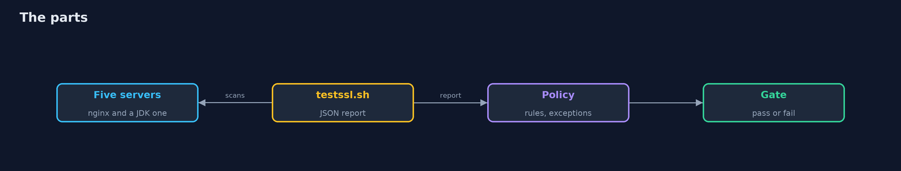
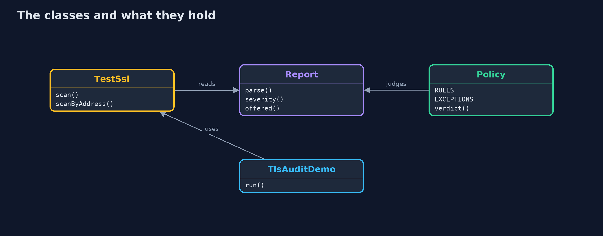
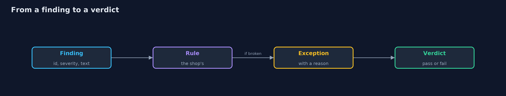
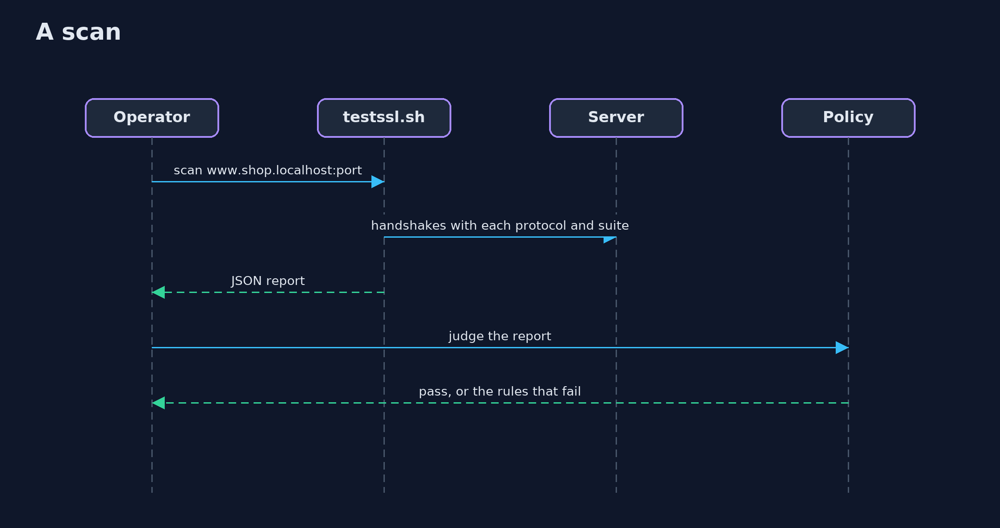

TLS Misconfigurations with testssl.sh
src/main/java/com/jk/explore/security/tlsaudit/
├── LegacyServer.java A server that speaks what old clients speak: TLS 1.0 and 1.1 next to 1.2, and only RSA key exchange, so no forward secrecy
├── LocalCa.java A root made with the step command, and the certificates it signs, good and bad
├── Nginx.java A real nginx on a loopback port, with a TLS configuration written for each case
├── Policy.java The shop's own rules for a TLS server, written over what testssl.sh reports, and the exceptions that have a reason and a name
├── Procs.java Small helpers for running programs
├── Report.java What testssl.sh wrote in its JSON file: one finding per check, each with the severity testssl gives it
├── TestSsl.java The real testssl.sh, pointed at one server on a loopback port with the name a browser would use
└── TlsAuditDemo.java
testssl.sh reads a server the way a client does and reports protocols, cipher suites, the certificate and the headers with its own severities; a TLS gate is the shop's own list of rules written over that report, with exceptions that carry a reason, because a copied configuration breaks rules no browser shows, an old protocol is only LOW to the tool and forbidden by the rule, and a scan by address reports a false name problem.
The plain tls-misconfigurations project reads a server's TLS settings in Java and grades them. This one runs the real scanner, testssl.sh (brew install testssl), against five real local servers started by the demo, reads its JSON file, and writes the shop's own policy over it. It also needs nginx and the step command (brew install nginx step). Nothing is installed globally and no Docker is needed; the tests are tagged integration (except the policy tests): ./gradlew integrationTest.
What it shows:
- A server that follows the guidance. TLS 1.2 and 1.3, strong suites with forward secrecy, a certificate that chains to the lab's root, HSTS for two years. testssl itself calls one finding HIGH: no CRL or OCSP URI. The shop's policy has an exception for it, with a reason.
- A configuration copied from the first search result. Same certificate, same protocols; it breaks four rules no browser shows: obsolete suites, no HSTS, no security headers, a version in the Server header.
- A server that speaks what old clients speak. Written with the JDK (which refuses to unless told): TLS 1.0 and 1.1, only RSA key exchange. testssl calls the old protocols LOW; the shop's rule refuses them.
- Certificates clients will refuse. An expired one and one for another name.
- The bill. A scan by address reports a name problem that is not real; a scan is a snapshot; an exception without a reason is a switch someone will turn off.
Maps to: OWASP Top 10 (2025) A02 Security Misconfiguration and A04 Cryptographic Failures · CWE-326 (inadequate encryption strength), CWE-327, CWE-295 · NIST SP 800-52 · Mozilla's server-side TLS guidelines.
The idea in everyday terms
A building inspector with a long checklist. The inspector writes what is there and how worried the code book is about it; the owner decides which items are a condition of opening the shop, and writes down, with a reason, the few that are waived.
The scenario
An online store runs several services behind TLS and wants to know, before a customer's browser does, which of them are wrong and why. The demo plays the store's operator with a scanner.
Run
./gradlew run
The demo tells the story in 5 acts, each printing exact numbers that the tests check:
| Act | What it shows |
|---|---|
| 1. A server that follows the guidance | TLS 1.2 and 1.3, forward secrecy, a trusted chain and HSTS; testssl calls one finding HIGH and the shop's policy excepts it with a reason. |
| 2. A configuration copied from the first search result | The same certificate and protocols, without ciphers, headers or server_tokens off, break four rules that no browser shows. |
| 3. A server that still speaks what old clients speak | TLS 1.0 and 1.1 and RSA key exchange only: testssl calls the old protocols LOW and the shop's rule refuses them. |
| 4. Certificates that clients will refuse | An expired certificate and a certificate for another name are CRITICAL and HIGH, and stop every browser. |
| 5. The bill | A scan by address raises a false alarm, a scan is a snapshot, and an exception without a reason is a switch someone will turn off. |
Test
./gradlew test
14 tests in DemoRunsTest, PolicyTest, TlsAuditTest. The policy tests need nothing. The scan tests start the servers once for the whole class and need nginx, step and testssl.sh (./gradlew integrationTest).
What the simulation got right, and what it left out
The servers are real: four nginx instances and one written with the JDK, on free loopback ports, with certificates from a root made with the step command. testssl.sh runs as a program and its JSON file is read back. Ports, dates and counts that change are never printed; the demo takes about a minute.
Technologies and versions
Every version below is pinned in the project's build files and was the latest stable release when the project was built.
| Technology | Version | Used for |
|---|---|---|
| Java | 25 | the language and runtime; a Gradle toolchain finds or downloads the JDK |
| Gradle | 9.8.1 (wrapper) | build and run; nothing to install, the wrapper downloads it |
| tools.jackson.core:jackson-databind | 3.1.5 | library the code uses |
| org.junit.jupiter:junit-jupiter | 6.1.3, set by junit-bom | JUnit 5: the tests (tests only) |
| org.junit.platform:junit-platform-launcher | 6.1.3, set by junit-bom | JUnit platform launcher, which Gradle needs to run the tests (tests only) |
| videokit | repository tool (tools/videokit) |
the narrated video and animation: Piper en_US-amy-medium, speed 0.8, longer pauses (the amy-slow voice) |
Learning Material
| Document | What it is for |
|---|---|
| Problem statement | the situation and what the project must show |
| Prerequisites | what you need to know first |
| TLS Misconfigurations with testssl.sh, explained | the acts in prose |
| Session guide | a one-hour lesson with exercises |
| Animated walkthrough | the acts step by step, narrated |
| Threat model | what is protected, who could harm it, and how, using STRIDE |
| Spec | what this project must be true of |
| Expected output | the golden demo output every test and every port checks against |
The idea in one picture
Servers on one side, the scanner and the shop's policy on the other.

Where each piece sits
A scanner, a report and a policy.

How the data moves
The tool's severity is only one input.

Who calls whom, in order

Video
video/tls-misconfigurations-with-testssl-explained.mp4 (with .m4a audio and .srt subtitles) is built by video/build_video.sh. Rendered media is not committed.
What it costs
- A scan takes about fifteen seconds per server, and many more with the vulnerability checks.
- The tool's severities are its own: the shop's rules decide what blocks a release.
- Every exception needs a reason and a person who reads it again.
- A scan is a snapshot of one moment and one path.
- A false alarm costs trust in the gate as much as a missed finding costs safety.
When this is too much
A single static site on a managed host, with the host's own defaults, gains little from a policy of its own. The gate pays off when the shop runs several servers, changes them often, or must show its auditors what it checks.
Where you have already met this
- A report from an online SSL test tool, with a letter grade.
ssl_protocolsandssl_cipherslines copied from a blog post.- A scanner step in a pipeline that fails on severity HIGH.
- A certificate that expired on a Sunday.
Where this sits
This is the tools version of tls-misconfigurations, in the tls-in-practice module. The servers it scans are the kind configured in tls-servers-in-practice-with-nginx-and-caddy.